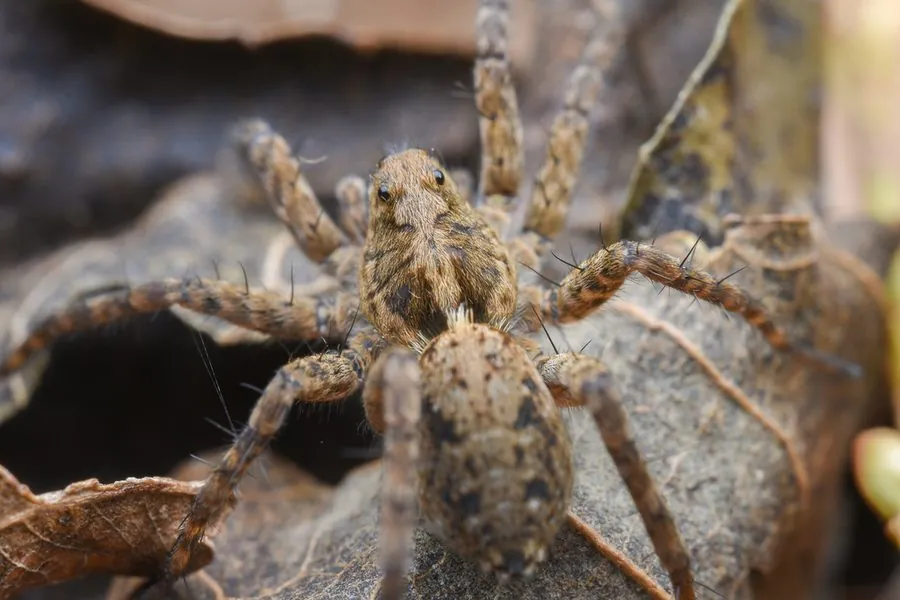

蛛形动物 · 动物界
星豹蛛 Pardosa astrigera

东亚农田与草地最常见的小型狼蛛，体色褐灰带浅色纵纹，不结网而靠奔跑捕猎，雌蛛把卵囊挂在腹末、幼蛛爬上背部。
- 分类
- 门节肢动物门纲蛛形纲目蜘蛛目科狼蛛科属豹蛛属
- 栖息环境
- 农田、稻田埂、草地、林缘与灌木丛的地面与低矮植被
- 地理分布
- 中国大部、日本、朝鲜半岛及俄罗斯远东地区
- 保护级别
- IUCN 未评估；为农田常见天敌，无保护压力
物种志
星豹蛛体长约 5–8 毫米，雌蛛略大于雄蛛。身体呈褐灰至暗褐色，背甲中央有一条浅色纵带，两侧各有一条深色纵纹，边缘浅色；腹部亦有浅色中央纵带与成对的浅色斑点，整体花纹像星光点点，故得名“星豹蛛”。步足细长，布满刺毛，第四对步足最长，适于快速奔跑。
它们是东亚农田、草地、稻田埂与林缘最常见的狼蛛之一，不结捕猎网，靠视觉与震动感知在地面奔跑追捕猎物，食性包括飞虱、叶蝉、蚜虫、小型蛾类与蚊蝇，是稻田害虫的重要天敌。雌蛛把卵囊黏在纺器上随身携带，孵化后幼蛛会爬上母蛛背部，随母蛛活动数日才分散。一年可发生多代，以成蛛或亚成蛛越冬。因其捕食量大、适应性强，被广泛用于稻田生物防治研究。
形态与习性
- 体长约 5–8 mm，雌蛛略大
- 食性飞虱、叶蝉、蚜虫、小型蛾类与蚊蝇
- 捕猎方式不结网，靠奔跑与跳跃在地面追捕猎物
- 育幼雌蛛把卵囊挂在腹末，幼蛛孵化后爬上母背
- 一年世代一年可发生多代，以成蛛或亚成蛛越冬
- 生态作用稻田害虫的重要天敌，被用于生物防治研究
- 寿命约 6–12 个月
趣味知识
- 星豹蛛不结网，全靠一双长腿在田埂上追着飞虱跑。
- 雌蛛把卵囊挂在屁股后面随身带着，走到哪护到哪。
- 幼蛛孵化后会爬到母亲背上挤成一层，过几天才各自散去。